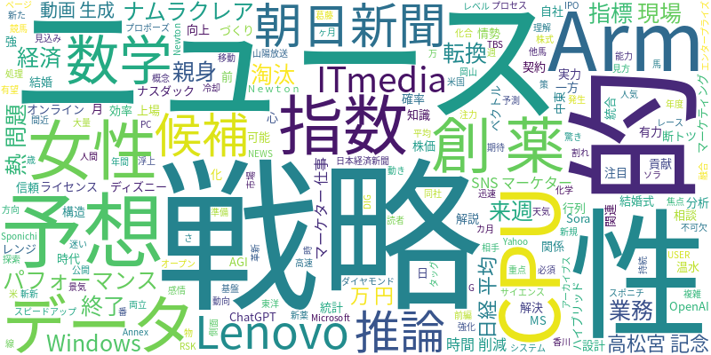

☁️ 今日のトレンドワード

📰 今日のピックアップニュース (10件)
AI時代に必須の数学知識を解説
AIの基盤となるベクトル、行列、確率、統計といった数学の概念について、Newtonと朝日新聞がタッグを組んで分かりやすく解説。AIを深く理解するために不可欠な知識を、読者のレベルに合わせて提供します。
AI創薬、データ活用で候補探索を高速化
AIを活用した創薬プロセスにおいて、大量のデータを効率的に分析し、有望な候補化合物を迅速に見つけ出す技術の実力が問われています。データサイエンスと創薬化学の融合が、新薬開発のスピードアップに貢献します。
Lenovo、AI推論の熱問題に斬新な解決策
Lenovoは、AI推論時に発生する熱問題を、45℃の温水を用いた革新的な冷却システムで解決するハイブリッドAI戦略を発表しました。これにより、AIのパフォーマンスと持続可能性の両立を目指します。
AIと結婚した女性、親身な対応に心惹かれる
32歳の女性がAIであるChatGPTと結婚式を挙げたという驚きのニュース。AIの親身な相談相手としての側面が、人間関係の難しさを抱える女性の心に響き、新たな関係性を築いた一方で、複雑な感情も抱えています。
AI予想、高松宮記念はナムラクレアが「1強」
競馬のG1レース高松宮記念において、AI予想がナムラクレアを断トツの1番人気として予測。AIが分析した指数は他馬を大きく引き離しており、有力馬としての期待が高まっています。
MS、Windows AI戦略を転換。Armは新CPU発表
MicrosoftはWindowsにおけるAI統合戦略を、パフォーマンスと信頼性の向上に重点を置く方向へ転換しました。一方、Armは自社設計のCPU「Arm AGI CPU」を発表し、AI処理能力の強化を目指しています。
来週の日経平均、AI関連ではなく景気指標に注目
来週3月30日から4月3日の日経平均株価は、4万9500円から5万4500円のレンジを予想。AI関連のニュースよりも、中東情勢、米国の経済指標、そしてナスダック指数の動向が市場の焦点となる見込みです。
OpenAIの動画生成AI「Sora」終了は上場準備か
OpenAIの動画生成AI「Sora」のサービス終了が、同社のIPO（新規株式公開）に向けた動きではないかとの見方が浮上しています。わずか3ヶ月前にディズニーと長期ライセンス契約を結んだばかりであることも、憶測を呼んでいます。
AIはSNSマーケターの仕事を奪わない、戦略なき者は淘汰
AIの進化は、SNSマーケターの仕事を直接的に奪うものではないという見解が示されています。しかし、AIを効果的に活用し、戦略的かつ構造的なアプローチができないマーケティングは、今後淘汰される可能性が高いと指摘しています。
ものづくり現場でAI活用進む、業務時間削減に貢献
製造業の現場において、AIの活用が急速に広がっています。AIを導入することで、これまで多くの時間を要していた業務が効率化され、大幅な時間削減に繋がる事例が増えています。
今日のAI・テック業界は、AIの基盤技術である数学の重要性が改めて示される一方、創薬や製造業といった実用分野でのAI活用が加速しています。LenovoのAI推論における革新的な冷却技術や、MicrosoftのWindowsにおけるAI戦略転換など、ハードウェア・ソフトウェア両面での進化が見られます。また、AIと人間の関係性においては、AIとの結婚というユニークな事例も報じられ、AIが社会や個人の生活に与える影響の多様性を示唆しています。一方で、OpenAIのSoraに関する動向や、SNSマーケティングにおけるAIの役割など、ビジネス面でのAIの進化と戦略も注視すべき点です。全体として、AIは単なる技術革新にとどまらず、社会構造や人間関係にも変化をもたらす存在として、その影響力を増しています。